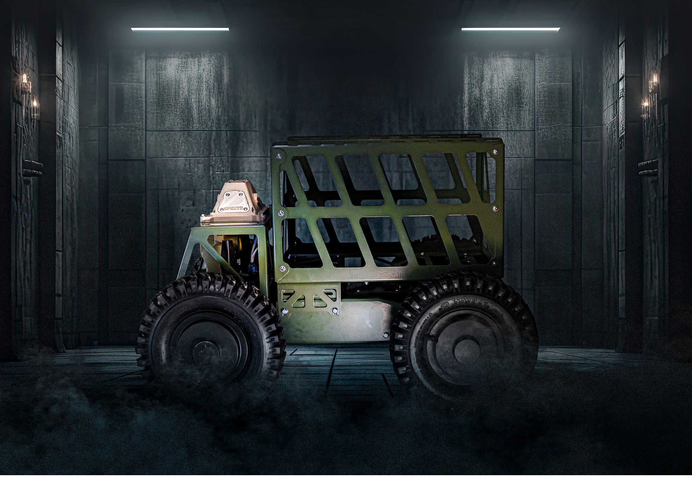
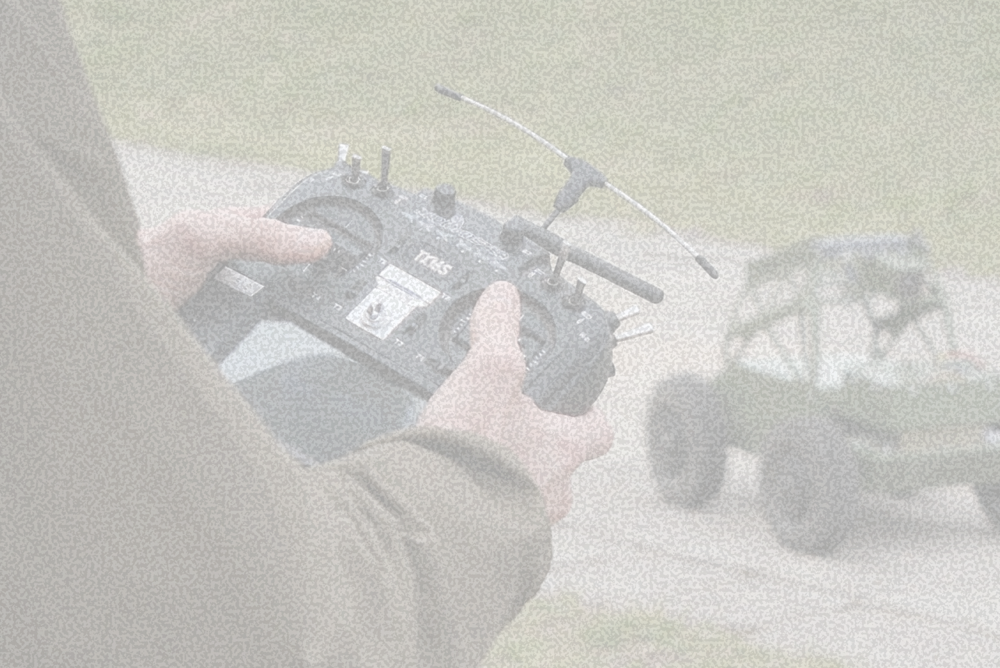
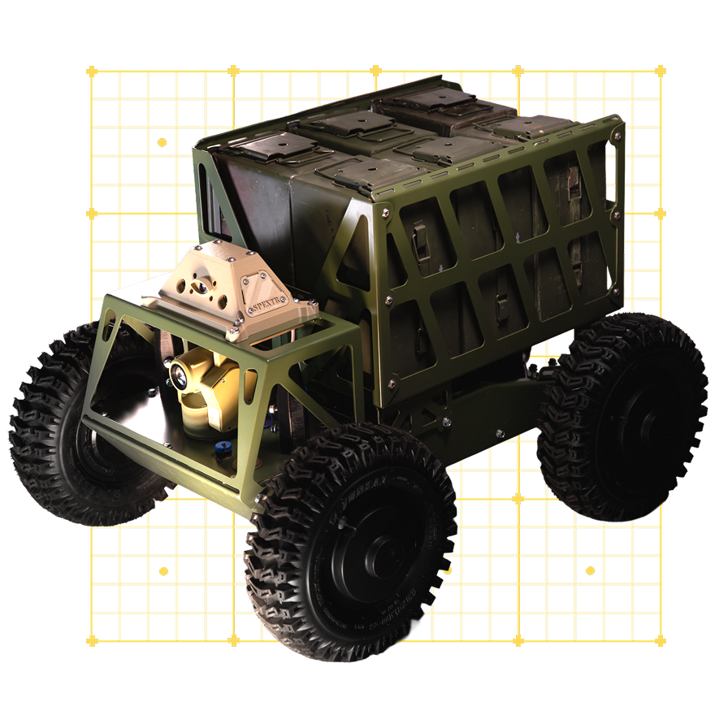
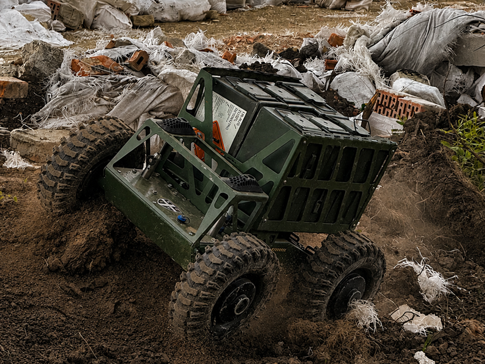
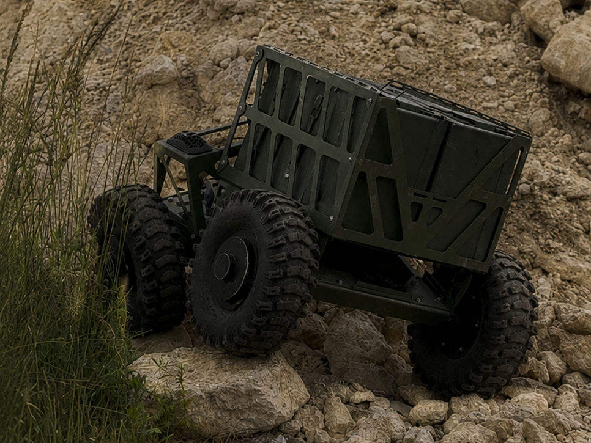
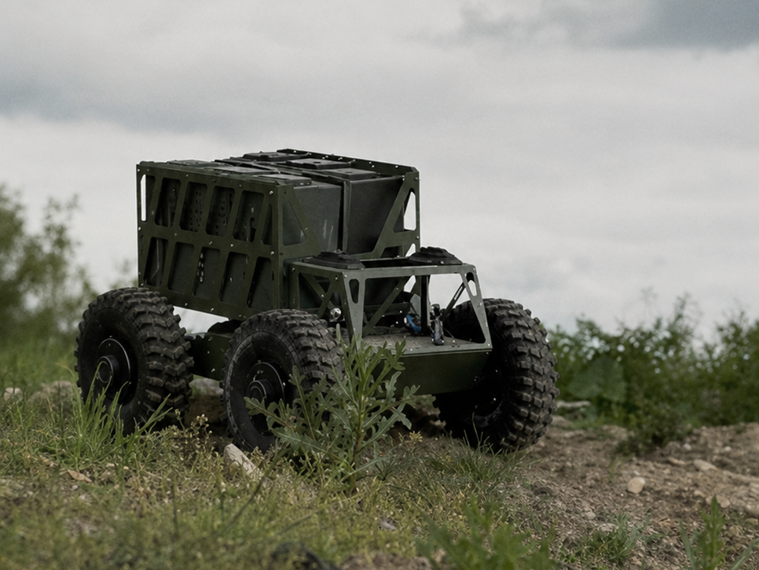
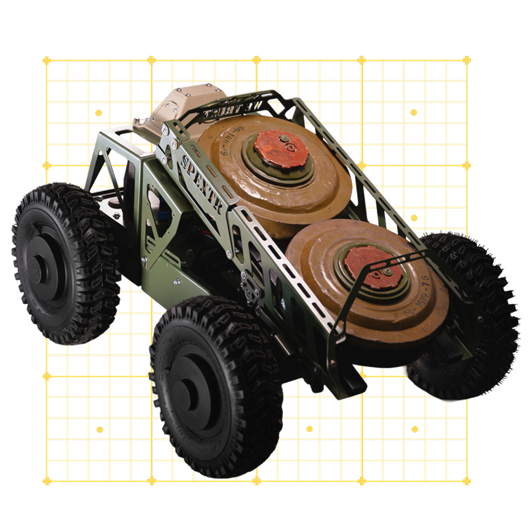
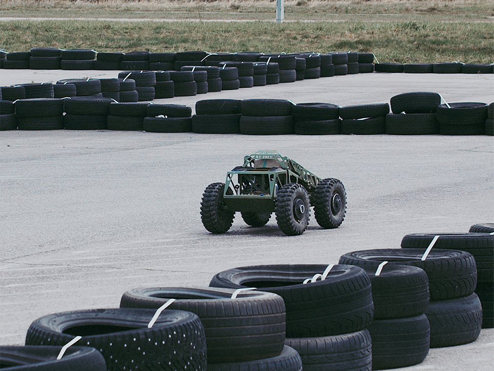
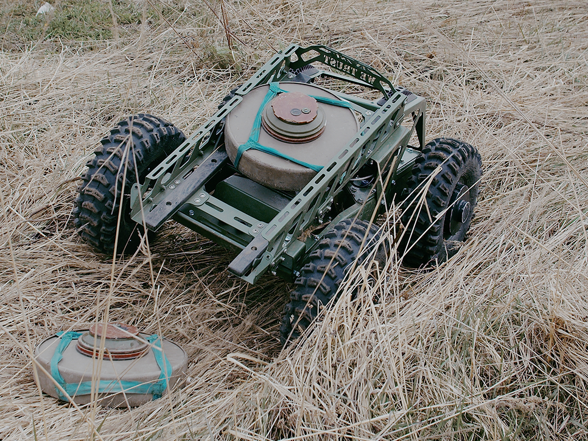

← НА ГОЛОВНУMILLITARY ROBOTICS TECHNOLOGY
МУЛЬТИФУНКЦІОНАЛЬНИЙ НАЗЕМНИЙ РОБОТИЗОВАНИЙ КОМПЛЕКС, З УНІКАЛЬНИМИ ПОЗАШЛЯХОВИМИ МОЖЛИВОСТЯМИ, КОМПАКТНИМИ РОЗМІРАМИ ТА МІЦНОЮ КОНСТРУКЦІЄЮ, ЩО ВИКОРИСТОВУЄТЬСЯ ДЛЯ ЛОГІСТИКИ, РОЗВІДКИ, МІНУВАННЯ, А ТАКОЖ МІСІЙ «КАМІКАДЗЕ». КОНСТРУКЦІЯ ПЕРЕДБАЧАЄ ШВИДКУ ЗМІНУ МОДУЛІВ ПІД РІЗНІ ЗАДАЧІ

SPEXTR ПРИСУТНІЙ ТАМ, ДЕ ТЕХНІКА ПРОХОДИТЬ НАЙЖОРСТКІШУ ПЕРЕВІРКУ — ПОРУЧ ІЗ ТИМИ, ХТО ЩОДНЯ ПРАЦЮЄ НА ЛІНІЇ ОБОРОНИ.
САМЕ ТАМ ФОРМУЄТЬСЯ РЕАЛЬНЕ РОЗУМІННЯ: ЩО МАЄ ВИТРИМУВАТИ НАЗЕМНИЙ РОБОТИЗОВАНИЙ КОМПЛЕКС, ЯКІ ЗАДАЧІ ВІН ПОВИНЕН ЗАКРИВАТИ, ДЕ СЛАБКІ МІСЦЯ, А ДЕ — СПРАВЖНЯ ПЕРЕВАГА.
КОЖНА ПОЇЗДКА, КОЖНА РОЗМОВА З ОПЕРАТОРАМИ, КОЖНЕ ТЕСТУВАННЯ В РЕАЛЬНИХ УМОВАХ — ЦЕ ДОСВІД, ЯКИЙ НЕМОЖЛИВО ОТРИМАТИ В ТЕОРІЇ.

МОДУЛЬНИЙ НАЗЕМНИЙ РОБОТИЗОВАНИЙ КОМПЛЕКС, РОЗРОБЛЕНИЙ ДЛЯ БЕЗПЕЧНОЇ ДОСТАВКИ ВАНТАЖІВ У ЗОНАХ ПІДВИЩЕНОГО РИЗИКУ.
В ДАНОМУ ВИКОНАННІ ПЕРЕВАГА ДРОНУ В МАЛОПОМІТНОСТІ І НАДНИЗЬКИЙ ГЕНЕРАЦІЇ ШУМУ. ПЛАТФОРМА ОСНАЩЕНА ЛОГІСТИЧНИМ МОДУЛЕМ, ЩО ДОЗВОЛЯЄ ТРАНСПОРТУВАТИ СПОРЯДЖЕННЯ, БОЄКОМПЛЕКТ, МЕДИЧНІ ЗАСОБИ ТА ІНШІ ВАНТАЖІ БЕЗ ЗАЛУЧЕННЯ ОСОБОВОГО СКЛАДУ.
СИСТЕМА ПЕРЕДБАЧАЄ ШВИДКУ ЗАМІНУ ДОДАТКОВИХ МОДУЛІВ, ЗОКРЕМА МІНУВАЛЬНОГО МОДУЛЯ, ДОПОМІЖНОГО АКУМУЛЯТОРНОГО МОДУЛЯ ТА МОДУЛЯ ЗВ'ЯЗКУ, ЩО ДОЗВОЛЯЄ КОРИСТУВАЧУ БУТИ ДУЖЕ АДАПТИВНИМ В ЗАСТОСУВАННІ.
РІВЕНЬ ВОЛОГОЗАХИСТУ IP66




МОДУЛЬНИЙ НАЗЕМНИЙ РОБОТИЗОВАНИЙ КОМПЛЕКС, РОЗРОБЛЕНИЙ ДЛЯ ДИСТАНЦІЙНОГО МІНУВАННЯ ТА ІНЖЕНЕРНИХ ЗАВДАНЬ У ЗОНАХ ПІДВИЩЕНОГО РИЗИКУ.
В ДАНОМУ ВИКОНАННІ ПЕРЕВАГА ДРОНУ В МАЛОПОМІТНОСТІ І НАДНИЗЬКИЙ ГЕНЕРАЦІЇ ШУМУ. ПЛАТФОРМА ОСНАЩЕНА МІНУВАЛЬНИМ МОДУЛЕМ, ЩО ДОЗВОЛЯЄ ВСТАНОВЛЮВАТИ ПРОТИТАНКОВІ МІНИ НА ВІДДАЛІ, БЕЗ ЗАЛУЧЕННЯ ОСОБОВОГО СКЛАДУ.
СИСТЕМА ПЕРЕДБАЧАЄ ШВИДКУ ЗАМІНУ ДОДАТКОВИХ МОДУЛІВ, ЗОКРЕМА ЛОГІСТИЧНОГО МОДУЛЯ, ДОПОМІЖНОГО АКУМУЛЯТОРНОГО МОДУЛЯ ТА МОДУЛЯ ЗВ'ЯЗКУ, ЩО ДОЗВОЛЯЄ КОРИСТУВАЧУ БУТИ ДУЖЕ АДАПТИВНИМ В ЗАСТОСУВАННІ.
РІВЕНЬ ВОЛОГОЗАХИСТУ IP66

